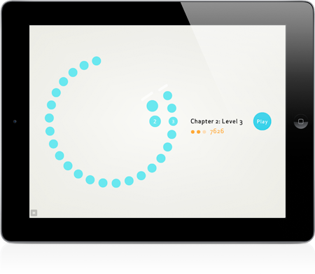

After a few long months of development, Pulsus is finally available for the iPad. From my original flash prototype, Pulsus has grown in every way possible. It’s found a new home on a wonderful device, has fully redrawn graphics, a new soundtrack, improved physics, a much improved interface, and a suite of new objects and levels on the way. The game has been completely rebuilt from the ground up in native Objective C and C++.
Visit the new Pulsus page for more information and pretty screenshots. View Pulsus in the app store. And play the old flash game.
The app is initially only available for the iPad but will be coming to the rest of the iOS family later this summer.


Of course, there is always more to improve, but Pulsus for the iPad has come very close to my original expectations for the game, creating a simple, but complex world and an enveloping series of meditative puzzles
Some Technical Notes
Pulsus is built using Objective C, C++, and C, it get’s a little hazy to be honest. All audio was created using Ableton Live and Adobe Soundbooth, graphics in Adobe Illustrator. Photoshop was always there to help out too. Original prototype created in Flash and AS3.
All type set in Apex Sans by Thirstype.
Special thanks for invaluable feedback and beta testing to Jason Corace, Jason Sloan, Andy Mangold, Dai Foldes, Dave Fong, and Josh Hepworth.
Moving Forward
Planned updates to Pulsus include an iPhone/iPod version, new objects and levels, and a good list of little improvements here and there.
If you enjoy Pulsus, any rating, reviewing, blogging, and retweeting is appreciated. The better Pulsus does, the better position I’ll be in to make more, and better games in the future. I may even be able to convince the rest of the Friends of The Web to work together on some awesome games.
Post Page »


")


{kind=link}
{kind=link}
{kind=link}
{kind=link}